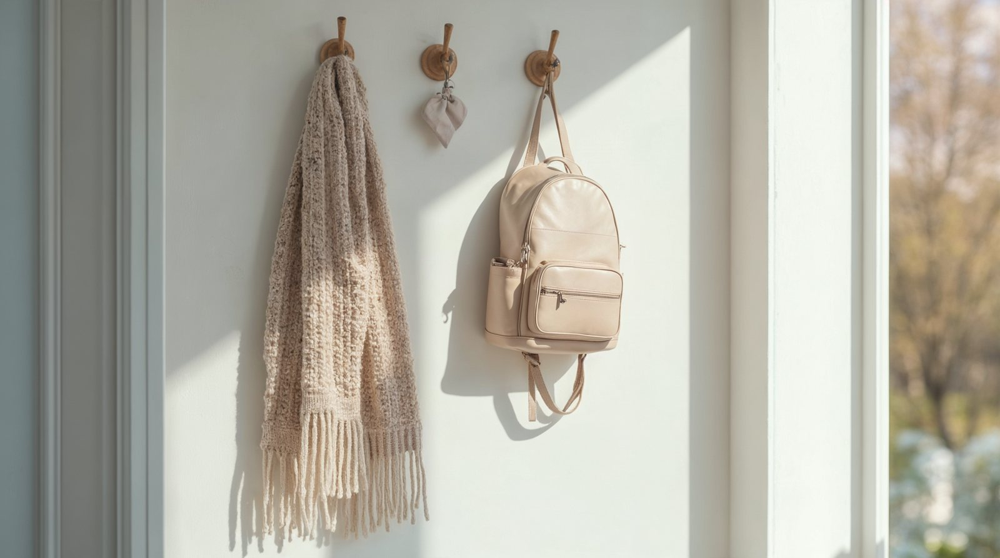
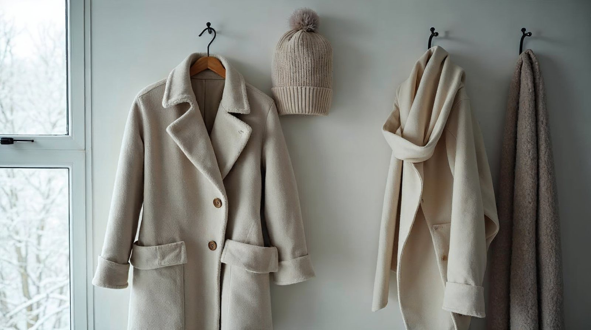
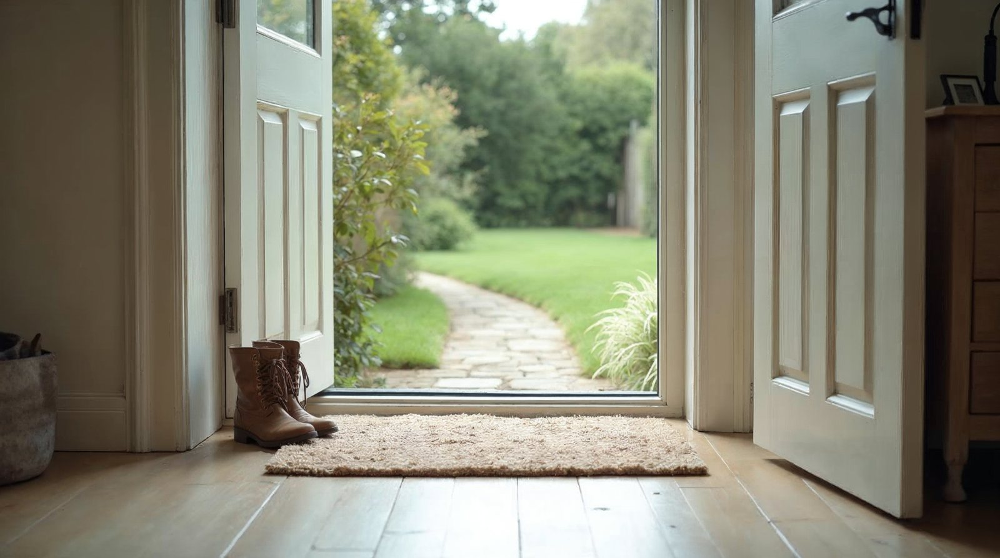
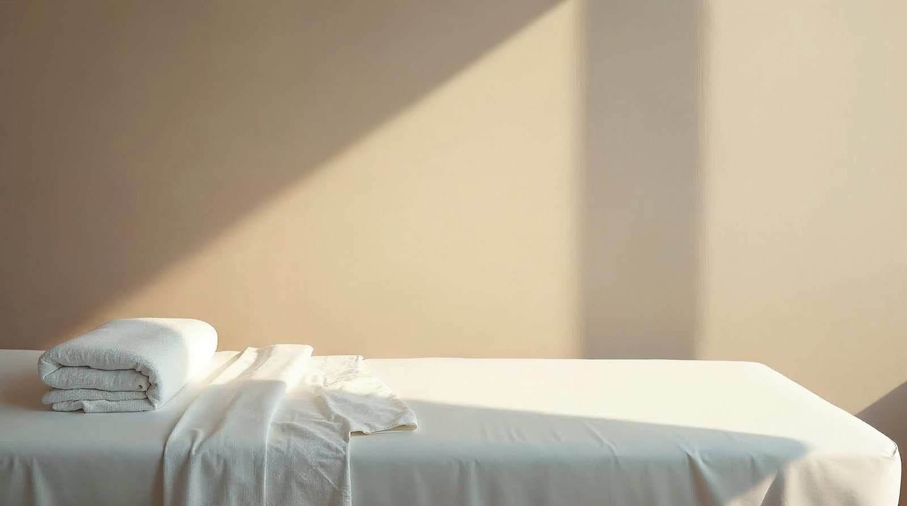
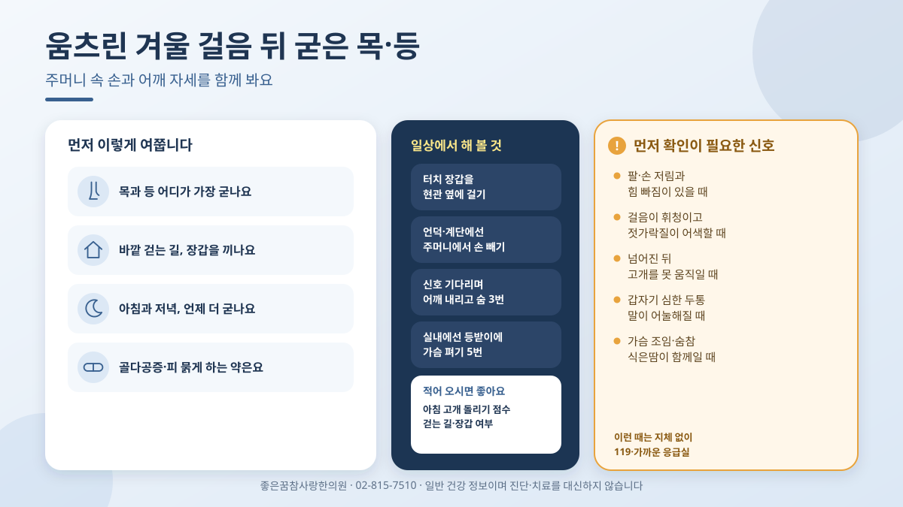

이종호 한의사 감수좋은꿈참사랑한의원 대표원장 (한의사 면허번호 19769)발행 2026-11-27 · 수정 2026-11-27
이 글의 차례
한파가 몰아치는 아침이면 장갑 대신 외투 주머니에 손을 깊이 넣고, 목을 움츠려 어깨를 귀 쪽으로 끌어올린 채 언덕길을 오르내리게 되죠. 이렇게 걷는 날이 몇 주 이어지면 저녁엔 뒷목이 묵직하고, 아침엔 고개를 옆으로 돌리거나 위를 올려다보기가 뻑뻑해집니다.
추우면 몸이 웅크리는 건 원래 그래요. 열을 덜 잃으려는 몸의 자연스러운 반응이거든요. 다만 '추워서 잠깐 움츠리는 것'과 '움츠린 자세가 몸에 익어 버리는 것'은 다른 얘기예요.
목 옆과 어깨 위, 날개뼈 사이 근육이 하루 종일 긴장한 채로 지내다 보면, 몸이 둥글게 말린 자세가 익숙해져요. 그러면 따뜻한 실내에 들어와서도 어깨가 잘 내려가지 않는 거예요.
그래서 저는 시작을 작게 잡아요. 장갑과 목도리로 손과 목을 먼저 데워서 주머니에서 손을 빼고 어깨를 내릴 수 있게 하고, 신호나 버스를 기다릴 때마다 어깨를 내리고 가슴을 펴는 짧은 동작을 넣어 보는 거예요.
주머니에 손을 넣은 채 언덕길을 걸으면 미끄러질 때 손으로 몸을 받치기 어려워 다칠 위험도 커져요. 손은 밖에 두시는 게 좋아요.
2~3주가 지나도 고개 돌리기가 뻑뻑하다면 그때는 진찰로 목과 등, 날개뼈와 갈비뼈의 움직임을 살핀 뒤 추나가 맞는지 같이 상담해요. 다만 팔로 저림이 내려오거나 손에 힘이 빠진다면 추나보다 신경 쪽 확인이 먼저입니다.
왜 움츠린 자세가 목과 등 위쪽을 굳게 할까요
- 추우면 몸은 열을 덜 잃으려고 저절로 웅크립니다. 어깨를 끌어올리는 근육(승모근 위쪽, 견갑거근)이 쉬지 않고 일하게 되어 목 옆과 어깨 위가 단단해집니다.
- 손을 주머니에 넣으면 팔이 몸통에 붙고 어깨가 앞으로 말립니다. 가슴 앞 근육은 짧아지고 등 위쪽 근육은 늘어난 채 버티느라 날개뼈 사이가 뻐근해지기 쉽습니다.
- 등이 둥글게 말리면 머리가 어깨보다 앞으로 나가고, 그 무게를 뒷목 근육이 계속 붙잡게 됩니다. 고개를 돌리거나 젖히는 범위도 함께 줄어듭니다.
- 걸을 때 팔을 흔들지 않으면 몸통이 덜 회전해 등 위쪽 관절이 덜 움직입니다. 언덕길에서는 몸을 앞으로 숙이고 오르게 되어 이런 자세가 더 강해집니다.
- 차가운 바람에 숨을 얕게 들이마시면 목과 어깨 근육까지 숨쉬기를 거들게 되어 긴장이 더해집니다.
- 두꺼운 패딩과 목을 덮는 목도리, 무거운 가방이 더해지면 어깨가 짐을 진 채 움츠러든 상태가 됩니다.
- 실내에 들어와서도 휴대폰이나 모니터를 보며 같은 자세를 이어 가면 하루 대부분을 움츠린 채 보내게 됩니다.
- 한의학에서는 찬 기운이 목과 어깨의 경락에 머물러 근육이 당기고 굳는 것을 한사(寒邪)로 설명하기도 하고, 몸이 움츠러들어 기혈이 고루 돌지 못하는 상태로 보기도 합니다.
먼저 이렇게 여쭙니다
- 목과 등 가운데 어디가 가장 굳는지, 고개를 어느 방향으로 돌릴 때 뻑뻑한지 여쭙니다.
- 하루에 바깥을 걷는 시간과 길, 언덕이나 계단이 얼마나 되는지, 장갑을 끼는지 주머니에 손을 넣는지 여쭙니다.
- 아침에 일어났을 때와 저녁 퇴근 뒤 가운데 언제 더 굳는지 여쭙니다.
- 팔이나 손으로 저림이 내려오는지, 손에 힘이 빠지는 느낌이 있는지 여쭙니다.
- 두통, 어지럼, 귀 울림이 함께 있는지 여쭙니다.
- 최근 넘어지거나 미끄러질 뻔한 일, 교통사고가 있었는지 여쭙니다.
- 골다공증 진단, 피를 묽게 하는 약 복용, 목이나 허리 수술 경험, 임신 가능성이 있는지 여쭙니다. 추나를 정할 때 꼭 알아야 하는 정보입니다.
- 베개 높이, 잠자는 자세, 하루 휴대폰과 모니터를 보는 시간도 함께 여쭙니다.

일상에서 먼저 해 볼 수 있는 것
나가기 전: 손과 목을 먼저 데우기
- 손이 시리지 않아야 주머니에서 손을 뺄 수 있습니다. 스마트폰 터치가 되는 장갑을 현관 옆에 걸어 두고 나갈 때 바로 낍니다.
- 목도리나 넥워머로 목 뒤와 옆을 덮으면 어깨를 끌어올려 목을 숨길 필요가 줄어듭니다.
- 외투는 무겁고 두꺼운 것 한 벌보다 얇은 옷을 여러 겹 입는 편이 어깨가 덜 짓눌립니다.
- 현관을 나서기 전에 어깨를 귀까지 5초 끌어올렸다가 툭 떨어뜨리기를 5번 합니다.
걸을 때: 손은 밖으로, 팔은 흔들며
- 언덕길과 계단에서는 주머니에서 손을 빼고 걷습니다. 미끄러질 때 손으로 몸을 받치거나 난간을 잡을 수 있어야 합니다.
- 가방은 한쪽 어깨에 메거나 손에 들기보다 양쪽 어깨로 메는 배낭을 쓰고, 끈을 짧게 조여 등에 붙입니다.
- 평지에서는 팔을 앞뒤로 가볍게 흔들며 걷습니다. 팔을 흔들면 몸통이 함께 돌며 등 위쪽이 덜 굳습니다.
- 횡단보도에서 신호를 기다리거나 버스를 기다릴 때 어깨를 내리고 날개뼈를 살짝 뒤로 모은 채 코로 천천히 숨을 3번 쉽니다. 하루에 열 번쯤 기회가 생깁니다.
실내에 들어와서: 5분 풀기
- 따뜻한 실내에 들어오면 외투를 벗고 의자에 앉아, 등받이 위쪽에 등을 대고 가슴을 천장 쪽으로 열며 5초 버티기를 5번 합니다.
- 턱을 뒤로 살짝 당겨 뒷목을 길게 하는 동작을 5초씩 10번 합니다. 고개를 숙이는 것이 아니라 턱을 수평으로 뒤로 미는 느낌입니다.
- 문틀에 양 팔꿈치를 어깨 높이로 대고 몸을 한 걸음 앞으로 내밀어 가슴 앞을 20초 늘리기를 3번 합니다.
- 고개를 좌우로 천천히 돌리며 뻑뻑한 쪽을 확인하고, 아픈 끝까지 억지로 돌리지 않습니다.
저녁과 잠자리
- 저녁에는 따뜻한 물로 목 뒤와 어깨 위에 5분쯤 샤워기를 대거나, 따뜻한 수건을 10~15분 올립니다. 너무 뜨겁게 하거나 핫팩을 피부에 직접 대고 잠들지 않습니다.
- 베개는 옆으로 누웠을 때 목이 기울지 않고, 바로 누웠을 때 턱이 들리지 않는 높이로 맞춥니다.
- 이불을 머리까지 덮고 웅크려 자면 밤새 같은 자세가 이어지기 쉬워, 실내 온도를 너무 낮추지 않고 이불 속에서도 팔다리를 펼 수 있게 합니다.

추나는 어떤 경우에 상담하나요
- 추나는 한의사가 손으로 근육과 관절의 움직임을 살피고, 굳은 곳을 밀고 당기거나 부드럽게 움직여 자세와 움직임을 바로잡도록 돕는 방법입니다. 우두둑 소리를 내는 것이 목적이 아니며, 소리 없이 진행되는 경우도 많습니다.
- 생활 조절을 2~3주 해 봐도 고개 돌리기가 뻑뻑하거나, 아침마다 목과 등 위쪽이 굳어 하루를 시작하기 힘든 경우 진찰을 거쳐 고려합니다.
- 목만 보지 않고 등 위쪽, 날개뼈와 갈비뼈가 움직이는 모양, 가슴 앞의 굳은 정도까지 함께 살핍니다.
- 골다공증이 있거나 최근 넘어진 분, 피를 묽게 하는 약을 드시는 분, 목 수술을 받은 분, 임신 중인 분은 미리 말씀해 주세요. 방법을 더 부드럽게 바꾸거나 다른 방법을 먼저 쓸 수 있습니다.
- 팔 저림, 손에 힘 빠짐, 걸음이 휘청이는 증상이 있다면 추나보다 신경 쪽 확인이 먼저일 수 있습니다.
- 받는 동안 불편하면 언제든 말씀해 주시면 세기와 방향을 바꿉니다. 받은 날에는 무거운 짐을 들거나 고개를 크게 젖히는 운동을 피하는 편이 좋습니다.
- 건강보험(또는 자동차보험) 적용 여부는 방문 전 전화로 확인해 주세요.
상황별 예시
- 예를 들어 상도동 언덕 위 집에서 버스 정류장까지 매일 아침 10분쯤 내리막을 걷는 직장인이, 한파가 시작된 뒤 장갑 없이 주머니에 손을 넣고 어깨를 움츠려 걷다가 2주째 오후만 되면 뒷목이 묵직한 경우, 터치 장갑과 넥워머를 챙기고 정류장에서 기다리는 동안 어깨 내리기와 숨 세 번을 해 보며 1~2주 기록해 봅니다.
- 예를 들어 노량진 학원가를 오가는 수험생이 추운 길을 움츠리고 걸은 뒤 다시 독서실에서 고개를 숙이고 공부해 하루 대부분을 둥글게 말린 자세로 보내다가, 아침에 고개를 오른쪽으로 돌리기 어려운 경우, 걷는 길과 공부 자세를 함께 살피고 쉬는 시간마다 의자 등받이에 등을 대고 가슴 펴기를 넣어 봅니다.
- 예를 들어 시장에서 가게를 운영하는 분이 추운 가게 앞에서 하루 종일 어깨를 움츠리고 서 있다가 날개뼈 사이가 결리고 숨을 크게 쉴 때 등이 당기는 경우, 얇은 조끼와 목도리로 몸통을 데우고 손님이 뜸한 시간에 문틀 가슴 늘리기를 해 봅니다. 숨 쉴 때 가슴이 조이듯 아프거나 숨이 찬다면 근육 문제로 넘기지 말고 진료를 먼저 받습니다.
- 예를 들어 빙판길에서 주머니에 손을 넣은 채 미끄러질 뻔하며 몸을 비틀어 버틴 뒤로 목과 등 한쪽이 결리는 경우, 넘어지지는 않았더라도 그때의 동작을 자세히 말씀해 주시면 어느 쪽 근육과 관절에 부담이 갔는지 살피는 데 도움이 됩니다.
자주 하는 오해
- 목이 뻑뻑하면 세게 돌리거나 꺾어서 소리를 내야 풀린다고 여기는 분이 있지만, 스스로 세게 꺾는 습관은 목에 부담이 될 수 있습니다. 천천히 움직이는 범위를 넓혀 가는 편이 안전합니다.
- 추나는 뼈를 맞추는 것이라 한 번에 자세가 바뀐다고 기대하기도 하는데, 몸에 익은 자세는 생활 습관과 함께 조금씩 달라집니다.
- 날씨가 추워서 그런 것이니 봄까지 참으면 된다고 여기기 쉽지만, 움츠린 자세가 몸에 익으면 봄이 와도 어깨가 내려가지 않는 경우가 있습니다.
- 등이 굽은 것은 나이 들면 어쩔 수 없다고 생각하는 분도 있습니다. 나이와 상관없이 매일 몇 분씩 가슴을 펴고 등을 움직이는 습관은 몸을 편하게 하는 데 도움이 될 수 있습니다.
- 주머니에 손을 넣으면 넘어질 때 몸이 덜 다칠 거라고 생각하는 분도 있지만, 오히려 손으로 몸을 받치지 못해 얼굴이나 어깨, 엉덩이로 바로 떨어질 수 있습니다.

스스로 점검해 보세요
- 바깥을 걸을 때 주머니에 손을 넣고 어깨를 움츠리는 날이 많다.
- 저녁이 되면 뒷목과 어깨 위가 묵직하고 단단하다.
- 아침에 고개를 한쪽으로 돌리거나 위를 올려다보기가 뻑뻑하다.
- 옆에서 찍은 사진을 보면 귀가 어깨보다 앞쪽에 있다.
- 숨을 크게 들이마실 때 날개뼈 사이가 당긴다.
- 실내에 들어와도 어깨가 올라가 있다는 말을 듣는다.
- 팔이나 손으로 저림이 내려오지는 않는다.

한의원에서 함께 살필 수 있는 경우
- 생활 조절을 2~3주 해 봤는데도 고개 돌리기가 뻑뻑한 경우
- 목만이 아니라 등 위쪽과 날개뼈 사이까지 함께 굳어 어디서부터 풀어야 할지 모르겠는 경우
- 추위에 움츠러들며 잠이 얕아지고 두통이 잦아져 몸 전체를 함께 보고 싶은 경우
- 추나가 맞는지, 받는다면 생활에서 무엇을 함께 바꿀지 상담이 필요한 경우
좋은꿈참사랑한의원에서는 첫 방문 때 굳는 자리와 시작된 시기, 하루 걷는 길과 바깥에서 지내는 시간, 일하거나 공부하는 자세를 먼저 듣습니다. 그다음 맥부터 짚어 몸이 얼마나 차고 지쳐 있는지 살피고, 혀와 배를 함께 보며 잠과 소화 상태까지 확인합니다.
이어서 서 있는 자세를 옆과 뒤에서 보고, 고개를 돌리고 숙이고 젖히는 범위, 어깨를 들어 올리는 움직임, 날개뼈와 갈비뼈가 숨 쉴 때 어떻게 움직이는지를 살핍니다. 넘어진 일이 있거나 근육과 힘줄 상태를 더 보아야 할 때는 필요하면 초음파로 목과 어깨 주변 근육을 확인합니다.
추나가 맞는다고 판단되면 어느 부위를 어떤 방법으로 할지 설명드리고, 침이나 온열 치료를 함께 쓸지도 의논합니다. 팔 저림이나 힘 빠짐처럼 신경 쪽 확인이 먼저라고 판단되면 영상 검사가 가능한 병원을 안내해 드립니다. 다음 진료 때는 지난번 이후 고개 돌리기와 저녁 무거움이 어땠는지, 장갑과 걷는 습관을 바꿔 보셨는지 이어서 여쭙니다.
얼마나 지켜보고 언제 상담할까요
- 장갑과 목도리를 챙기고 걷는 습관과 풀기 동작을 바꾼 뒤 2~3주 동안 아침 고개 돌리기와 저녁 무거움을 점수로 기록합니다.
- 점점 덜해지는 흐름이면 같은 습관을 이어 가고, 그대로이거나 굳는 범위가 넓어지면 진찰을 받아 보세요.
- 자고 일어나 갑자기 고개를 거의 돌리지 못하게 된 경우에는 며칠 지켜보기보다 일찍 상담하는 편이 좋습니다.
- 아래 신호가 있으면 기다리지 말고 먼저 확인을 받습니다.
이렇게 기록해 오시면 상담이 쉬워집니다
목이 굳는 날과 덜 굳는 날은 생각보다 들쭉날쭉해요. 원래 그래요. 날씨와 걷는 길, 그날 앉아 있던 시간이 다 섞여 있으니, 기억만으로는 무엇이 영향을 줬는지 가려내기 어렵거든요. 아래 몇 가지만 적어 오셔도 이야기가 훨씬 빨라져요.
- 하루 바깥을 걷는 길과 시간, 언덕과 계단의 양, 장갑을 꼈는지 여부
- 아침 고개 돌리기와 저녁 뒷목 무거움의 점수(0~10)
- 고개를 돌리기 어려운 방향과 굳는 자리를 표시한 그림
- 하루 휴대폰과 모니터를 보는 시간, 공부나 작업 자세
- 두통, 어지럼, 팔 저림이 있었다면 그 날짜와 상황
- 골다공증, 목 수술, 복용 중인 약(특히 피를 묽게 하는 약)
기록이 두세 주 쌓이면 장갑을 낀 날과 안 낀 날, 언덕을 많이 걸은 날과 덜 걸은 날이 나란히 보여요. 그 차이가 추나를 할지, 생활 조절을 더 이어 갈지를 정하는 데 큰 도움이 됩니다.
굳은 목과 등을 살피는 건 제가 맡을게요. 대신 하나만 부탁드려요. 현관을 나설 때 장갑부터 끼고, 걷는 동안 손을 주머니 밖에 두는 것. 그거 하나예요. 스트레칭 목록을 다 외우실 필요는 없어요. 딴 건 하시던 대로 편하게 하셔도 돼요.
어깨도 한 번에 세게 펴려고 하기보다 약하게, 오래, 매일이에요. 신호등 앞에서 어깨를 내리고 숨 세 번 쉬는 정도면 시작으로 충분하거든요. 궁금한 건 오셔서 그냥 편하게 물어보세요. 목과 등이 어떻게 움직이는지 같이 보면서 차근차근 정해 볼게요.
이런 증상은 먼저 확인이 필요합니다
- 팔이나 손으로 저림이 내려오고, 손에 힘이 빠져 물건을 자주 떨어뜨리는 경우
- 걸음이 휘청이거나 단추 채우기, 젓가락질이 어색해지는 경우
이런 신호가 있으면 한의원보다 가까운 병원이나 응급실을 먼저 찾으세요.
관련 글
- 거북목과 목 뒤 뻐근함은 한의원에서 어떻게 살피나요?
- 두꺼운 패딩에 무거운 가방까지 메는 겨울에 어깨가 처지고 아프면 어떻게 살피나요?
- 추나요법은 처음 받을 때 어떤 순서로 진행되나요?

여쭙는 것
- 목과 등 가운데 어디가 가장 굳는지, 고개를 어느 방향으로 돌릴 때 뻑뻑한지 여쭙니다.
- 하루에 바깥을 걷는 시간과 길, 언덕이나 계단이 얼마나 되는지, 장갑을 끼는지 주머…
- 아침에 일어났을 때와 저녁 퇴근 뒤 가운데 언제 더 굳는지 여쭙니다.
생활에서 해 볼 것
- 손이 시리지 않아야 주머니에서 손을 뺄 수 있습니다. 스마트폰 터치가 되는 장갑을…
- 목도리나 넥워머로 목 뒤와 옆을 덮으면 어깨를 끌어올려 목을 숨길 필요가 줄어듭니다.
- 외투는 무겁고 두꺼운 것 한 벌보다 얇은 옷을 여러 겹 입는 편이 어깨가 덜 짓눌립…
한의원에서 함께 살필 것
- 생활 조절을 2~3주 해 봤는데도 고개 돌리기가 뻑뻑한 경우
- 목만이 아니라 등 위쪽과 날개뼈 사이까지 함께 굳어 어디서부터 풀어야 할지 모르겠는…
- 추위에 움츠러들며 잠이 얕아지고 두통이 잦아져 몸 전체를 함께 보고 싶은 경우
먼저 확인이 필요한 신호
- 팔이나 손으로 저림이 내려오고, 손에 힘이 빠져 물건을 자주 떨어뜨리는 경우
- 걸음이 휘청이거나 단추 채우기, 젓가락질이 어색해지는 경우
한눈에 보는 표
| 구분 | 핵심 |
|---|---|
| 여쭙는 것 | 목과 등 가운데 어디가 가장 굳는지, 고개를 어느 방향으로 돌릴 때 뻑뻑한지 여쭙니다. 하루에 바깥을 걷는 시간과 길, 언덕이나 계단이 얼마나 되는지, 장갑을 끼는지 주머니에 손을 넣는지 여쭙니다. |
| 생활에서 해 볼 것 | 손이 시리지 않아야 주머니에서 손을 뺄 수 있습니다. 스마트폰 터치가 되는 장갑을 현관 옆에 걸어 두고 나갈 때 바로 낍니다. 목도리나 넥워머로 목 뒤와 옆을 덮으면 어깨를 끌어올려 목을 숨길 필요가 줄어듭니다. |
| 한의원에서 함께 살필 것 | 생활 조절을 2~3주 해 봤는데도 고개 돌리기가 뻑뻑한 경우 목만이 아니라 등 위쪽과 날개뼈 사이까지 함께 굳어 어디서부터 풀어야 할지 모르겠는 경우 |
| 먼저 확인이 필요한 신호 | 팔이나 손으로 저림이 내려오고, 손에 힘이 빠져 물건을 자주 떨어뜨리는 경우 걸음이 휘청이거나 단추 채우기, 젓가락질이 어색해지는 경우 |
자주 묻는 질문
주머니에 손을 넣고 걷는 게 정말 목과 등에 영향을 주나요?
손을 넣는 것만이 문제라기보다, 추위에 어깨를 끌어올리고 몸을 둥글게 마는 자세가 함께 이어지는 것이 부담이 됩니다. 장갑과 목도리로 몸을 데워 어깨를 내릴 수 있게 하는 것부터 해 보세요.
추나를 받으면 우두둑 소리가 나나요?
소리가 날 때도 있지만 소리를 내는 것이 목적은 아니고, 근육과 관절을 부드럽게 움직이는 방법으로 소리 없이 진행되는 경우도 많습니다. 받는 동안 불편하면 언제든 말씀해 주세요.
목이 뻑뻑할 때 집에서 세게 돌려 풀어도 되나요?
스스로 세게 꺾거나 돌리는 것은 권하지 않습니다. 아프지 않은 범위에서 천천히 고개를 돌리고, 턱 당기기와 가슴 펴기처럼 부드러운 동작을 자주 하는 편이 안전합니다.
추나는 얼마나 자주 받나요?
굳은 정도와 생활 습관, 받은 뒤 반응을 보며 간격을 정합니다. 건강보험 적용 조건과 비용은 방문 전 전화(02-815-7510)로 확인해 주세요.
따뜻하게 찜질하면 도움이 되나요?
저녁에 따뜻한 수건이나 샤워로 목 뒤와 어깨 위를 데우면 몸이 편하다고 느끼는 분이 많습니다. 다만 핫팩을 피부에 직접 대거나 붙인 채 잠들면 저온 화상이 생길 수 있어 주의하세요.
좋은꿈참사랑한의원은 재진 때 지난번 이야기부터 이어서 여쭙니다. 진료시간과 예약은 오시는 길에서 확인하세요.
어디서 상담받을 수 있나요?
좋은꿈참사랑한의원은 서울 동작구 만양로2길 2 신성빌딩 3층·5층(서울 동작구 상도동, 7호선 상도역 3번 출구 근처)에 있습니다. 한의사 3명(이종호 대표원장, 조영기 수석진료원장, 정원영 진료원장)이 진료합니다. 진료시간은 평일 09:30~20:00(점심 13:00~14:00), 토·일·공휴일 09:30~15:00이며, 방문 전 전화로 확인을 권합니다. 예약은 네이버 예약, 카카오톡 상담, 전화 02-815-7510로 받습니다.
이 글은 일반적인 건강 정보이며 개인의 진단이나 치료를 대신하지 않습니다. 증상이 있거나 복용 중인 약이 있다면 진료를 통해 확인하세요. 치료 효과는 개인마다 다를 수 있습니다.
작성 기준: 일반적으로 알려져 있는 건강 정보를 참고해 정리했습니다(대표원장 감수). 증상 기록은 1~2주 동안 하루 1회, 비슷한 시간에 적어 오시면 지난 상태와 비교하기 쉽습니다.